準備工具
帶十字鎬、食物、飲水與足夠背包空間。出發前確認工具狀態，並安排運送礦石的方式。
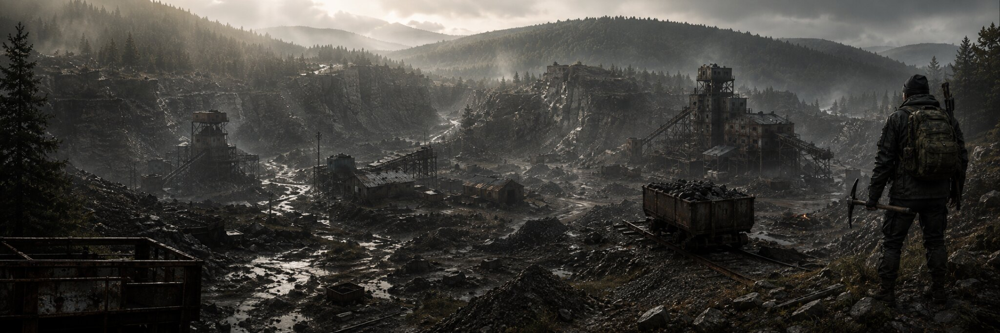
把「原礦、礦粒、礦錠」分清楚，就能接上整條製作路線。
帶十字鎬、食物、飲水與足夠背包空間。出發前確認工具狀態，並安排運送礦石的方式。
靠近礦脈，把工具拿在手上，對準可互動位置並執行採集。礦點與掉落由伺服器安排，可先查看地圖或詢問其他礦工。
原礦送去熔煉；礦粒留下來鍛造；未加工寶石送去研磨。石材、硫磺與其他材料另外存放，避免拿錯。
先取得六種金屬的礦粒，集滿同種 10 顆後在鐵砧製成礦錠。已有礦粒時，可以直接進入鍛造步驟。
先決定目標配方，再保留所需品質。高品質寶石不一定能替代低品質材料，不要把所有瑕疵寶石都升階。
查下方合成表，依序製作融合礦錠、特殊合金或升級十字鎬。不同支線的材料並不通用。
先架設設備、補齊附件，再放入對應加工階段的材料。
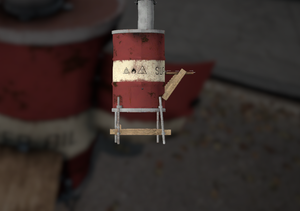
金屬板 ×5 ＋ 木板 ×5
附件：丙烷氣瓶、丙烷連接管、木箱
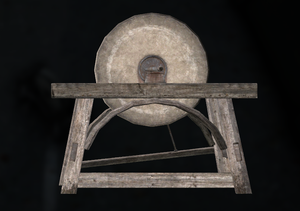
石頭 ×1 ＋ 木板 ×3
附件：研磨輪、木箱
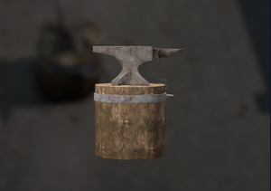
鐵礦粒 ×5 ＋ 木板 ×3
附件：鍛造錘、木箱
八種寶石共用同一套規則：琥珀、翡翠、堇青石、紫水晶、海藍寶石、紅寶石、綠松石、彩色鑽石。
先選系列再存材料；礦錠名稱相近，也不能跨系列替換。
第 1 階：金屬錠 ×1 ＋ 瑕疵寶石 ×10
第 2 階：同系列瑕疵礦錠 ×2 ＋ 標準寶石 ×5
第 3 階：同系列標準礦錠 ×3 ＋ 完美寶石 ×2
第 4～6 階使用指定成品兩兩融合，最後製成核心融合礦錠。詳見合成表「高階礦錠」。
特殊合金順序：附魔 → 精金 → 鈷 → 克里曼特 → 鈦元素。
金屬十字鎬路線逐階升級；官方現行寶石路線則可用一般十字鎬搭配指定品質寶石，製作對應階級。兩條路線擇一使用。
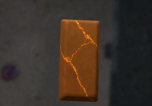
青銅系列銅 ＋ 琥珀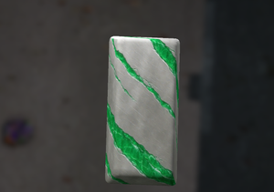
鋼系列鐵 ＋ 翡翠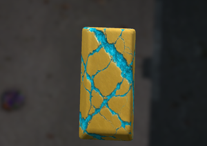
琥珀金系列黃金 ＋ 海藍寶石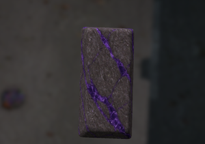
複合系列鈾 ＋ 堇青石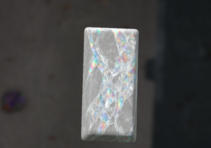
水晶系列銀 ＋ 彩色鑽石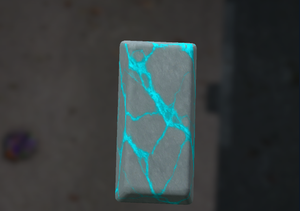
稜彩系列錫 ＋ 綠松石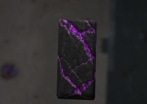
虛空系列鐵 ＋ 紫水晶 紅寶石系列鈾 ＋ 紅寶石
紅寶石系列鈾 ＋ 紅寶石依本頁附帶合成圖的用量展開：需要同系列基礎金屬錠 ×6、瑕疵寶石 ×60、標準寶石 ×15、完美寶石 ×2。若所有寶石都從瑕疵開始升級，等同同種瑕疵寶石 ×123。這是材料加總，不包含設備耗材。
從工作站、六種金屬、八種寶石，到融合礦錠、特殊合金與兩條十字鎬路線。
共 87 筆配方
| 製作成品 | 所需材料 | 操作方式與說明 |
|---|---|---|
| 工作站熔煉爐套件×1 | 金屬板×5木板×5 | 手持合成 部署後裝上丙烷氣瓶、連接管與木箱。 依據：官方教學 |
| 工作站研磨石套件×1 | 石頭×1木板×3 | 手持合成 部署後裝上研磨輪與木箱。 依據：官方教學 |
| 工作站鐵砧套件×1 | 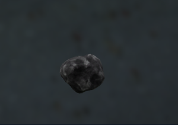 鐵礦粒×5木板×3 | 手持合成 部署後裝上鍛造錘與木箱。 依據：官方教學 |
| 工作站熔煉爐套件×1 | 熔煉爐×1螺絲起子 | 現場拆除 先停止工作並整理設備內物品；螺絲起子是工具。 依據：官方教學 |
| 工作站研磨石套件×1 | 研磨石×1螺絲起子 | 現場拆除 先停止工作並整理設備內物品；螺絲起子是工具。 依據：官方教學 |
| 工作站鐵砧套件×1 | 鐵砧×1螺絲起子 | 現場拆除 先停止工作並整理設備內物品；螺絲起子是工具。 依據：官方教學 |
| 工作站已補充的丙烷氣瓶 | 汽油桶 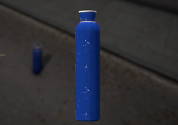 丙烷氣瓶 | 物品互動 遊戲內配方使用汽油桶補充模組專用氣瓶；消耗量以互動顯示為準。 依據：官方教學 |
| 基礎加工 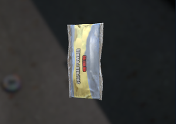 硫磺粉 | 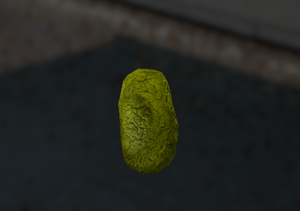 精煉硫磺 | 鐵砧 官方列出此粉碎配方，未註明投入與產出數量。 依據：官方教學 |
| 基礎加工 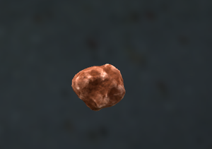 銅礦粒 | 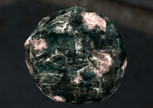 銅礦石 | 熔煉爐 投入原礦並啟動；單次產量依設備顯示。 依據：官方教學 |
| 基礎加工 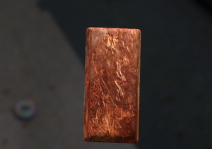 銅礦錠×1 | 銅礦粒×10 | 鐵砧依據：官方教學 |
| 基礎加工 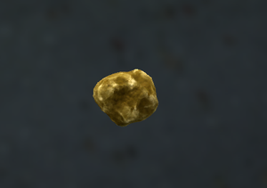 黃金礦粒 | 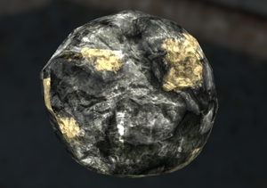 黃金礦石 | 熔煉爐 投入原礦並啟動；單次產量依設備顯示。 依據：官方教學 |
| 基礎加工 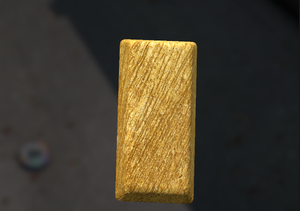 黃金礦錠×1 | 黃金礦粒×10 | 鐵砧依據：官方教學 |
| 基礎加工鐵礦粒 | 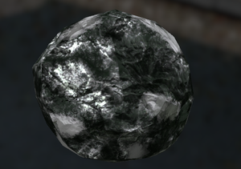 鐵礦石 | 熔煉爐 投入原礦並啟動；單次產量依設備顯示。 依據：官方教學 |
| 基礎加工 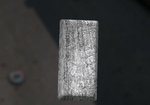 鐵礦錠×1 | 鐵礦粒×10 | 鐵砧依據：官方教學 |
| 基礎加工 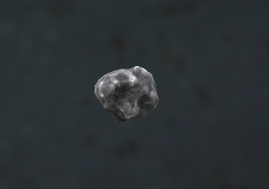 銀礦粒 | 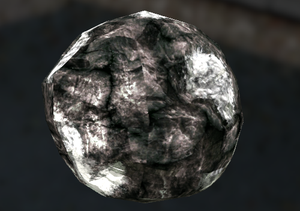 銀礦石 | 熔煉爐 投入原礦並啟動；單次產量依設備顯示。 依據：官方教學 |
| 基礎加工 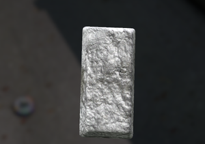 銀礦錠×1 | 銀礦粒×10 | 鐵砧依據：官方教學 |
| 基礎加工 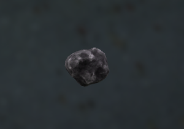 錫礦粒 | 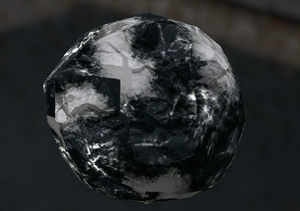 錫礦石 | 熔煉爐 投入原礦並啟動；單次產量依設備顯示。 依據：官方教學 |
| 基礎加工 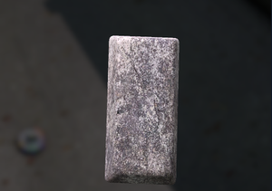 錫礦錠×1 | 錫礦粒×10 | 鐵砧依據：官方教學 |
| 基礎加工 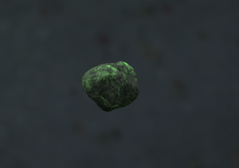 鈾礦粒 | 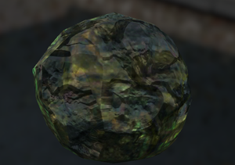 鈾礦石 | 熔煉爐 投入原礦並啟動；單次產量依設備顯示。 依據：官方教學 |
| 基礎加工 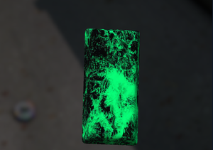 鈾礦錠×1 | 鈾礦粒×10 | 鐵砧依據：官方教學 |
| 寶石加工瑕疵切割琥珀×1 | 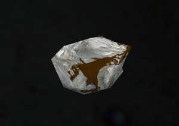 未加工琥珀×1 | 研磨石 品質進程開啟時產出；關閉時改為標準品質。 依據：官方教學 |
| 寶石加工 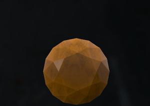 標準切割琥珀×1 | 瑕疵切割琥珀×3 | 手持合成 同種同品質，分成 2 顆與 1 顆後組合。 依據：官方教學 |
| 寶石加工 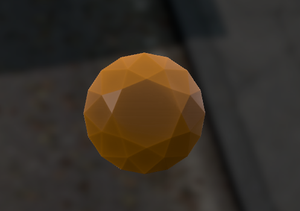 完美切割琥珀×1 | 標準切割琥珀×3 | 手持合成 同種同品質，分成 2 顆與 1 顆後組合。 依據：官方教學 |
| 融合礦錠 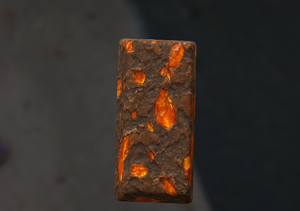 瑕疵青銅礦錠×1 | 銅礦錠×1瑕疵切割琥珀×10 | 鐵砧 第 1 階。材料種類經官方配方核對；數量依附帶合成參考圖。 依據：官方配方＋附帶合成圖 |
| 融合礦錠 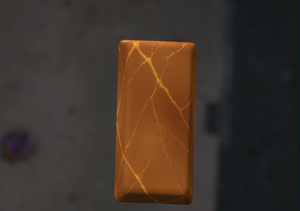 標準青銅礦錠×1 | 瑕疵青銅礦錠×2標準切割琥珀×5 | 鐵砧 第 2 階。材料種類經官方配方核對；數量依附帶合成參考圖。 依據：官方配方＋附帶合成圖 |
| 融合礦錠完美青銅礦錠×1 | 標準青銅礦錠×3完美切割琥珀×2 | 鐵砧 第 3 階。材料種類經官方配方核對；數量依附帶合成參考圖。 依據：官方配方＋附帶合成圖 |
| 寶石加工 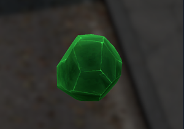 瑕疵切割翡翠×1 |  未加工翡翠×1 未加工翡翠×1 | 研磨石 品質進程開啟時產出；關閉時改為標準品質。 依據：官方教學 |
| 寶石加工 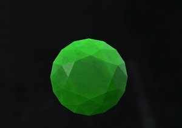 標準切割翡翠×1 | 瑕疵切割翡翠×3 | 手持合成 同種同品質，分成 2 顆與 1 顆後組合。 依據：官方教學 |
| 寶石加工 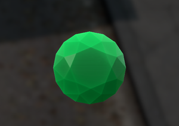 完美切割翡翠×1 | 標準切割翡翠×3 | 手持合成 同種同品質，分成 2 顆與 1 顆後組合。 依據：官方教學 |
| 融合礦錠 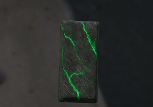 瑕疵鋼礦錠×1 | 鐵礦錠×1瑕疵切割翡翠×10 | 鐵砧 第 1 階。材料種類經官方配方核對；數量依附帶合成參考圖。 依據：官方配方＋附帶合成圖 |
| 融合礦錠 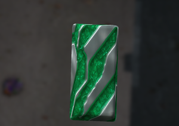 標準鋼礦錠×1 | 瑕疵鋼礦錠×2標準切割翡翠×5 | 鐵砧 第 2 階。材料種類經官方配方核對；數量依附帶合成參考圖。 依據：官方配方＋附帶合成圖 |
| 融合礦錠完美鋼礦錠×1 | 標準鋼礦錠×3完美切割翡翠×2 | 鐵砧 第 3 階。材料種類經官方配方核對；數量依附帶合成參考圖。 依據：官方配方＋附帶合成圖 |
| 寶石加工 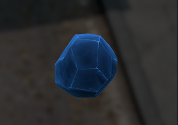 瑕疵切割海藍寶石×1 | 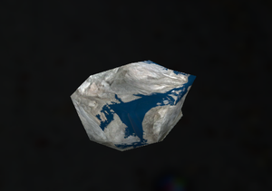 未加工海藍寶石×1 | 研磨石 品質進程開啟時產出；關閉時改為標準品質。 依據：官方教學 |
| 寶石加工 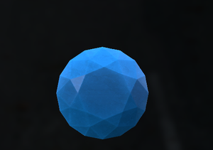 標準切割海藍寶石×1 | 瑕疵切割海藍寶石×3 | 手持合成 同種同品質，分成 2 顆與 1 顆後組合。 依據：官方教學 |
| 寶石加工 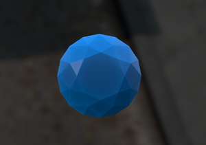 完美切割海藍寶石×1 | 標準切割海藍寶石×3 | 手持合成 同種同品質，分成 2 顆與 1 顆後組合。 依據：官方教學 |
| 融合礦錠 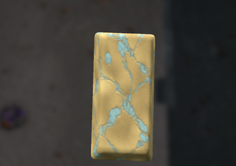 瑕疵琥珀金礦錠×1 | 黃金礦錠×1瑕疵切割海藍寶石×10 | 鐵砧 第 1 階。材料種類經官方配方核對；數量依附帶合成參考圖。 依據：官方配方＋附帶合成圖 |
| 融合礦錠 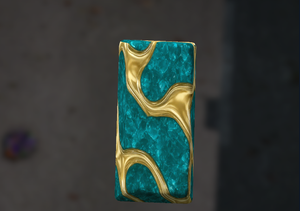 標準琥珀金礦錠×1 | 瑕疵琥珀金礦錠×2標準切割海藍寶石×5 | 鐵砧 第 2 階。材料種類經官方配方核對；數量依附帶合成參考圖。 依據：官方配方＋附帶合成圖 |
| 融合礦錠完美琥珀金礦錠×1 | 標準琥珀金礦錠×3完美切割海藍寶石×2 | 鐵砧 第 3 階。材料種類經官方配方核對；數量依附帶合成參考圖。 依據：官方配方＋附帶合成圖 |
| 寶石加工 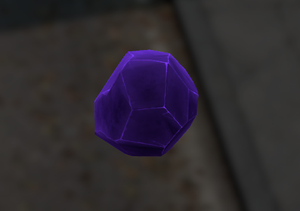 瑕疵切割堇青石×1 | 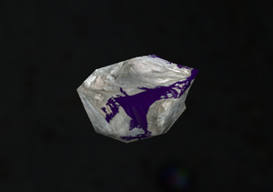 未加工堇青石×1 | 研磨石 品質進程開啟時產出；關閉時改為標準品質。 依據：官方教學 |
| 寶石加工標準切割堇青石×1 | 瑕疵切割堇青石×3 | 手持合成 同種同品質，分成 2 顆與 1 顆後組合。 依據：官方教學 |
| 寶石加工完美切割堇青石×1 | 標準切割堇青石×3 | 手持合成 同種同品質，分成 2 顆與 1 顆後組合。 依據：官方教學 |
| 融合礦錠瑕疵複合礦錠×1 | 鈾礦錠×1瑕疵切割堇青石×10 | 鐵砧 第 1 階。材料種類經官方配方核對；數量依附帶合成參考圖。 依據：官方配方＋附帶合成圖 |
| 融合礦錠標準複合礦錠×1 | 瑕疵複合礦錠×2標準切割堇青石×5 | 鐵砧 第 2 階。材料種類經官方配方核對；數量依附帶合成參考圖。 依據：官方配方＋附帶合成圖 |
| 融合礦錠完美複合礦錠×1 | 標準複合礦錠×3完美切割堇青石×2 | 鐵砧 第 3 階。材料種類經官方配方核對；數量依附帶合成參考圖。 依據：官方配方＋附帶合成圖 |
| 寶石加工瑕疵切割彩色鑽石×1 | 未加工彩色鑽石×1 | 研磨石 品質進程開啟時產出；關閉時改為標準品質。 依據：官方教學 |
| 寶石加工標準切割彩色鑽石×1 | 瑕疵切割彩色鑽石×3 | 手持合成 同種同品質，分成 2 顆與 1 顆後組合。 依據：官方教學 |
| 寶石加工完美切割彩色鑽石×1 | 標準切割彩色鑽石×3 | 手持合成 同種同品質，分成 2 顆與 1 顆後組合。 依據：官方教學 |
| 融合礦錠瑕疵水晶礦錠×1 | 銀礦錠×1瑕疵切割彩色鑽石×10 | 鐵砧 第 1 階。材料種類經官方配方核對；數量依附帶合成參考圖。 依據：官方配方＋附帶合成圖 |
| 融合礦錠標準水晶礦錠×1 | 瑕疵水晶礦錠×2標準切割彩色鑽石×5 | 鐵砧 第 2 階。材料種類經官方配方核對；數量依附帶合成參考圖。 依據：官方配方＋附帶合成圖 |
| 融合礦錠完美水晶礦錠×1 | 標準水晶礦錠×3完美切割彩色鑽石×2 | 鐵砧 第 3 階。材料種類經官方配方核對；數量依附帶合成參考圖。 依據：官方配方＋附帶合成圖 |
| 寶石加工瑕疵切割綠松石×1 | 未加工綠松石×1 | 研磨石 品質進程開啟時產出；關閉時改為標準品質。 依據：官方教學 |
| 寶石加工標準切割綠松石×1 | 瑕疵切割綠松石×3 | 手持合成 同種同品質，分成 2 顆與 1 顆後組合。 依據：官方教學 |
| 寶石加工完美切割綠松石×1 | 標準切割綠松石×3 | 手持合成 同種同品質，分成 2 顆與 1 顆後組合。 依據：官方教學 |
| 融合礦錠瑕疵稜彩礦錠×1 | 錫礦錠×1瑕疵切割綠松石×10 | 鐵砧 第 1 階。材料種類經官方配方核對；數量依附帶合成參考圖。 依據：官方配方＋附帶合成圖 |
| 融合礦錠標準稜彩礦錠×1 | 瑕疵稜彩礦錠×2標準切割綠松石×5 | 鐵砧 第 2 階。材料種類經官方配方核對；數量依附帶合成參考圖。 依據：官方配方＋附帶合成圖 |
| 融合礦錠完美稜彩礦錠×1 | 標準稜彩礦錠×3完美切割綠松石×2 | 鐵砧 第 3 階。材料種類經官方配方核對；數量依附帶合成參考圖。 依據：官方配方＋附帶合成圖 |
| 寶石加工瑕疵切割紫水晶×1 | 未加工紫水晶×1 | 研磨石 品質進程開啟時產出；關閉時改為標準品質。 依據：官方教學 |
| 寶石加工標準切割紫水晶×1 | 瑕疵切割紫水晶×3 | 手持合成 同種同品質，分成 2 顆與 1 顆後組合。 依據：官方教學 |
| 寶石加工完美切割紫水晶×1 | 標準切割紫水晶×3 | 手持合成 同種同品質，分成 2 顆與 1 顆後組合。 依據：官方教學 |
| 融合礦錠瑕疵虛空礦錠×1 | 鐵礦錠×1瑕疵切割紫水晶×10 | 鐵砧 第 1 階。材料種類經官方配方核對；數量依附帶合成參考圖。 依據：官方配方＋附帶合成圖 |
| 融合礦錠標準虛空礦錠×1 | 瑕疵虛空礦錠×2標準切割紫水晶×5 | 鐵砧 第 2 階。材料種類經官方配方核對；數量依附帶合成參考圖。 依據：官方配方＋附帶合成圖 |
| 融合礦錠完美虛空礦錠×1 | 標準虛空礦錠×3完美切割紫水晶×2 | 鐵砧 第 3 階。材料種類經官方配方核對；數量依附帶合成參考圖。 依據：官方配方＋附帶合成圖 |
| 寶石加工瑕疵切割紅寶石×1 | 未加工紅寶石×1 | 研磨石 品質進程開啟時產出；關閉時改為標準品質。 依據：官方教學 |
| 寶石加工標準切割紅寶石×1 | 瑕疵切割紅寶石×3 | 手持合成 同種同品質，分成 2 顆與 1 顆後組合。 依據：官方教學 |
| 寶石加工完美切割紅寶石×1 | 標準切割紅寶石×3 | 手持合成 同種同品質，分成 2 顆與 1 顆後組合。 依據：官方教學 |
| 融合礦錠瑕疵紅寶石礦錠×1 | 鈾礦錠×1瑕疵切割紅寶石×10 | 鐵砧 第 1 階。材料種類經官方配方核對；數量依附帶合成參考圖。 依據：官方配方＋附帶合成圖 |
| 融合礦錠標準紅寶石礦錠×1 | 瑕疵紅寶石礦錠×2標準切割紅寶石×5 | 鐵砧 第 2 階。材料種類經官方配方核對；數量依附帶合成參考圖。 依據：官方配方＋附帶合成圖 |
| 融合礦錠完美紅寶石礦錠×1 | 標準紅寶石礦錠×3完美切割紅寶石×2 | 鐵砧 第 3 階。材料種類經官方配方核對；數量依附帶合成參考圖。 依據：官方配方＋附帶合成圖 |
| 高階礦錠昇華礦錠×1 | 完美虛空礦錠×1完美稜彩礦錠×1 | 鐵砧 第 4 階。必須使用這兩種指定礦錠。 依據：官方配方＋附帶合成圖 |
| 高階礦錠天界礦錠×1 | 完美琥珀金礦錠×1完美水晶礦錠×1 | 鐵砧 第 4 階。必須使用這兩種指定礦錠。 依據：官方配方＋附帶合成圖 |
| 高階礦錠無限礦錠×1 | 完美青銅礦錠×1完美複合礦錠×1 | 鐵砧 第 4 階。必須使用這兩種指定礦錠。 依據：官方配方＋附帶合成圖 |
| 高階礦錠泰坦鍛造礦錠×1 | 完美鋼礦錠×1 完美紅寶石礦錠×1 | 鐵砧 第 4 階。必須使用這兩種指定礦錠。 依據：官方配方＋附帶合成圖 |
| 高階礦錠血金屬錠×1 | 天界礦錠×1無限礦錠×1 | 鐵砧 第 5 階。必須使用這兩種指定礦錠。 依據：官方配方＋附帶合成圖 |
| 高階礦錠虛空鋼錠×1 | 昇華礦錠×1泰坦鍛造礦錠×1 | 鐵砧 第 5 階。必須使用這兩種指定礦錠。 依據：官方配方＋附帶合成圖 |
| 高階礦錠核心融合礦錠×1 | 血金屬錠×1虛空鋼錠×1 | 鐵砧 第 6 階。必須使用這兩種指定礦錠。 依據：官方配方＋附帶合成圖 |
| 特殊合金附魔礦錠×1 | 瑕疵切割海藍寶石×1鈾礦錠×10 | 鐵砧 寶石品質按目前官方清單；金屬用量按官方進階表。中文名稱沿用實機圖鑑。 依據：官方教學 |
| 特殊合金精金礦錠×1 | 標準切割堇青石×1附魔礦錠×7 | 鐵砧 寶石品質按目前官方清單；金屬用量按官方進階表。中文名稱沿用實機圖鑑。 依據：官方教學 |
| 特殊合金鈷礦錠×1 | 標準切割綠松石×1精金礦錠×5 | 鐵砧 寶石品質按目前官方清單；金屬用量按官方進階表。中文名稱沿用實機圖鑑。 依據：官方教學 |
| 特殊合金克里曼特礦錠×1 | 完美切割紅寶石×1鈷礦錠×3 | 鐵砧 寶石品質按目前官方清單；金屬用量按官方進階表。中文名稱沿用實機圖鑑。 依據：官方教學 |
| 特殊合金鈦元素礦錠×1 | 完美切割紫水晶×1克里曼特礦錠×2 | 鐵砧 寶石品質按目前官方清單；金屬用量按官方進階表。中文名稱沿用實機圖鑑。 依據：官方教學 |
| 十字鎬T1 強化鐵鎬×1 | 一般十字鎬×1鐵礦錠 | 合成動作 金屬路線：逐階升級。官方清單未標材料用量；操作位置以遊戲提示為準。 依據：官方教學 |
| 十字鎬T1 強化鐵鎬×1 | 一般十字鎬×1瑕疵切割紅寶石 | 合成動作 寶石路線：官方現行清單三階皆列一般十字鎬為起點；與附帶舊圖不同。用量以遊戲提示為準。 依據：官方教學 |
| 十字鎬T2 水晶鍛造鎬×1 | T1 強化鐵鎬×1銅礦錠 | 合成動作 金屬路線：逐階升級。官方清單未標材料用量；操作位置以遊戲提示為準。 依據：官方教學 |
| 十字鎬T2 水晶鍛造鎬×1 | 一般十字鎬×1標準切割海藍寶石 | 合成動作 寶石路線：官方現行清單三階皆列一般十字鎬為起點；與附帶舊圖不同。用量以遊戲提示為準。 依據：官方教學 |
| 十字鎬T3 融合核心鎬×1 | T2 水晶鍛造鎬×1黃金礦錠 | 合成動作 金屬路線：逐階升級。官方清單未標材料用量；操作位置以遊戲提示為準。 依據：官方教學 |
| 十字鎬T3 融合核心鎬×1 | 一般十字鎬×1完美切割紫水晶 | 合成動作 寶石路線：官方現行清單三階皆列一般十字鎬為起點；與附帶舊圖不同。用量以遊戲提示為準。 依據：官方教學 |
| 舊版轉換同種瑕疵寶石×1 | 同種舊版切割寶石×1 | 手持合成 官方教學列出 1 換 1。僅供舊存檔物品轉換；若無此動作，先確認伺服器版本。 依據：官方教學 |
找不到相符配方。試試較短的物品名稱，或清除分類。
按照加工階段分類。點擊圖片可放大，比對背包裡的材料。
123 / 123 張
沒有相符圖片，請換一個關鍵字或清除分類。
遇到問題時，先確認材料階段、品質與設備狀態。
先確認手持的是可用採礦工具，靠近並重新對準礦脈。普通地形石頭可能未開放採集，礦脈也可能已耗盡。仍無法採集時，記錄位置並向管理員回報。
原礦先加工成礦粒；礦粒湊滿同種類 10 顆，再到鐵砧鍛造成 1 顆基礎礦錠。原礦、礦粒與礦錠是不同材料。
開啟品質進程時，這是正常的第一階產物。保留配方需要的瑕疵寶石，再用三合一升到標準或完美。
請按配方指定品質準備。例如需要瑕疵紅寶石時，不要直接拿完美紅寶石代替；兩者是不同物品。
寶石繼承部分小石頭行為，組合時可能有多個動作。確認同種同品質並拆成 2＋1，切換到寶石升級再製作。
現行配方改用瑕疵、標準或完美品質。官方教學保留舊版切割寶石轉換成同種瑕疵寶石的配方；請查看遊戲是否有轉換動作。
模組設定列有輻射、硫磺粉塵、礦脈坍塌、氣體與不穩定礦石等風險開關，是否生效取決於伺服器。遇到氣體或異常狀態先停止作業、離開現場，再依服內醫療規則處理。
採礦模組本身提供資源加工與製作。武器覺醒、商城交換或職業用途屬伺服器額外系統，請以對應工作台顯示的配方與成功率為準。
先檢查材料品質與伺服器模組版本，再確認附件、堆疊及數量。回報時附上成品名稱、材料截圖與工作站畫面，方便管理員核對。
整理日期：2026 年 9 月 23 日｜官網挖礦指南 V7.69
物品名稱與照片取自 123 張實機圖鑑；工作站用量、寶石品質、特殊合金品質及十字鎬起點依目前官方教學整理。融合與高階礦錠用量以附帶合成圖補充。